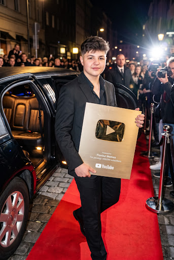
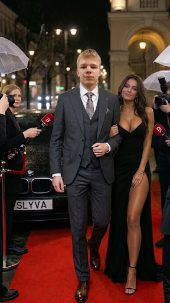
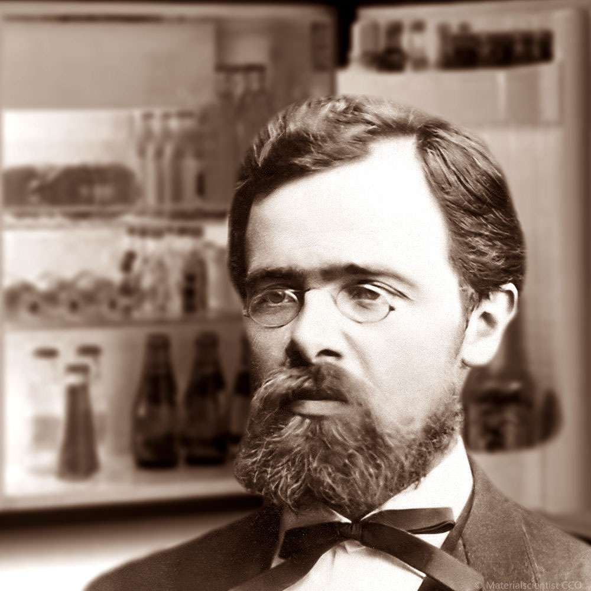

Šaldytuvas ir
šilumos siurblys
Medžiagos būsenų kitimas, šaldymo mašinos termodinaminis ciklas, šilumos siurblio naudingumo koeficientas (1 : 4), Karlo fon Lindės 1876 m. išradimas ir Arianhoot! viktorina.


Vitalij Žuravliov
PROJEKTO AUTORIUS • YOUTUBE KNIPKĖ


Laurynas Basys
PROJEKTO AUTORIUS • RED CARPET
Garavimas šaldo
Slėgio mažinimas pažemina skysčio virimo temperatūrą.
Kaip priversti skystį virti be kaitinimo?
Jau žinai, kad norint išgarinti skystį jam reikia suteikti šilumos, o keičiant išorinį slėgį (spaudimą) galima pakeisti skysčio virimo temperatūrą. Sumažinus slėgį virimo temperatūra krenta.
Virimas 20 °C kambario temperatūroje
Eterio virimo temperatūra normaliomis sąlygomis yra 35 °C. Jei į kolbą įpilsime eterio, sandariai uždarysime ir siurbsime iš jos orą, eteris užvirs 20 °C temperatūroje.
Kodėl kolba iš išorės pasidengia šerkšnu?
Verdant skysčiui iš jo išlekia pačios greičiausios molekulės ir temperatūra mažėja — energiją, kurios reikia garinimui, skystis ima iš jį supančios aplinkos.
Kambario temperatūroje (20 °C) eteris dar neverda. Sumažink slėgį!
Šaldytuvo sandara ir ciklas
1. Kompresorius
Su varikliu sujungtas compressor (suspaudėjas) sukuria labai didelį slėgį, suspaudžia garus ir pumpuoja juos vamzdeliais į kondensatorių.
2. Kondensatorius (Galinė sienelė)
Išraizgytas šaldytuvo galinėje sienelėje. Jame skysčio garai kondensuojasi ir išskiria į aplinką kondensacijos metu išsiskyrusią energiją.
3. Išsiplėtimo vožtuvas
Skystis pasiekia išsiplėtimo vožtuvą ir pakliūva į garintuvą, kuriame slėgis yra žemas.
4. Garintuvas (Viršutinėje dalyje)
Žemo slėgio vamzdeliuose skystis užverda ir smarkiai garuoja imdamas energiją iš šaldytuve esančių produktų, po to vėl grįžta į kompresorių.
1. KOMPRESORIUS — PRIVERSTINIS ŠILUMOS TEKĖJIMAS
Kompresoriumi priverčiame šilumą tekėti iš vėsesnių vietų į šiltesnes. Svarbu transportuojant ar valant šaldytuvą nepažeisti vamzdelių — išgaravus skysčiui šaldytuvas neveiks.
Oro kondicionierius ir šaldytuvas
4 šaldytuvo dalys + ventiliatorius = oro kondicionierius.
Kaip šaldytuvo dalys virsta kondicionieriumi?
- 01 Jeigu tas pačias keturias pagrindines šaldytuvo dalis (kompresorių, garintuvą, kondensatorių ir išsiplėtimo vožtuvą) sujungsime šiek tiek kitaip ir dar prijungsime ventiliatorių, gausime oro kondicionierių.
- 02 Garintuve garuojantis skystis ima šilumą iš aplinkos. Oras aplink ventiliatorių atvėsta ir nukreipiamas į norimą patalpos vietą.
- 03 Kondicionieriaus kondensatorius yra išorėje (lauke), todėl iš kambario paimta šiluma pašalinama iš pastato.
Kondicionierius paima šilumą iš kambario ir išmeta ją į lauką — kambarys vėsta.
Trys įrenginiai — vienas fizikinis ciklas
Šaldytuvas vėsina uždarą izoliuotą kamerą, o šilumą atiduoda virtuvei. Kondicionierius turi ventiliatorių, vėsina viso kambario orą, o šilumą išmeta į lauką.
Šaldytuvo tikslas — atšaldyti kamerą (naudojamas šaltas garintuvas), o šilumos siurblio tikslas — šildyti namus ir vandenį (naudojama kondensatoriaus išskiriama šiluma, paimta iš grunto, vandens ar oro).
Galinėje sienelėje esantis kondensatorius į tą patį kambarį atiduoda tiek pat šilumos, kiek paėmė iš kameros, plius elektros variklio (kompresoriaus) išskirtą šilumą.
Šilumos siurblys (COP 1 : 4)
1 kWh elektros energijos → 4 kWh šilumos namams šildyti.
Kas yra šilumos siurblys?
Įrenginys, kuris ima šilumą iš aplinkos (grunto, nuotekų, aplinkos oro, greta esančio ežero ar jūros) ir panaudoja ją patalpoms bei vandeniui šildyti nedeginant jokio iškastinio kuro. Žiemą, kai ežero vanduo užšąla, įjungiamas papildomas šilumos šaltinis.
108 MJ elektros → 360 MJ šilumos
Paprasčiausi šilumos siurbliai, kuriems energija (apytiksliai 108 MJ) reikalinga tik kompresoriui varyti, pateikia apie 360 MJ šiluminės energijos pastatams šildyti ir karštam vandeniui ruošti.
Kol nebuvo elektrinių šaldytuvų
Ledo spinta, Karlas fon Lindė (1876 m.) ir požeminė ledainė.
Ledo spinta
- • Izoliacija: Dvigubos sienelės, užpildytos sausomis pjuvenomis.
- • Sandara: Viršutinėje dalyje gulėjo ledo gabalai ir geriamojo vandens indas, viduryje — lentynėlės maistui, apačioje — indas tirpstančio ledo vandeniui.
- • 2 trūkumai: Viduje nuolat būdavo drėgna (kaupėsi bakterijos ir pelėsiai), o žiemą paruoštą ledą reikėjo ilgai saugoti neištirpusį.

Karlas fon Lindė
Nuo 1876 m. natūralų ledą ėmė keisti dirbtinis. Vokiečių fizikas ir inžinierius Karlas fon Lindė (1842–1934) sukūrė šaldytuvo pirmtaką — pirmą galingą ledo šaldymo mašiną.
Ledainė
- • Konstrukcija: Nedidelis pastatas po žeme su dvigubomis sienomis su oro tarpu, šiaudine pastoge ir nendrėmis uždengtu stogu.
- • Šilumos izoliacija: Apklotas šilumą izoliuojančiomis medžiagomis — šiaudais, durpėmis, nendrėmis ir velėnomis.
- • Ledo atsargos: Žiemą iš užšalusio vandens telkinio prigabenti ledo luitai išsilaikydavo net keletą metų!
Užduočių atsakymai ir sprendimai
[SPAUSK ANT BET KURIOS KORTELĖS ATSAKYMUI APVERSTI]
Ar atidarius veikiantį šaldytuvą galima atvėsinti butą? Pagrįsk kodėl.
RODYTI ATSAKYMĄ →Ne, butas tik sušils. Šaldytuvo kondensatorius galinėje sienelėje į kambarį išskiria visą iš vidaus paimtą šilumą plius kompresoriaus variklio šilumą.
ENERGIJOS TVERMĖS DĖSNISPaaiškink, kodėl garintuvas šaldytuve įrengiamas viršuje, o ne apačioje.
RODYTI ATSAKYMĄ →Nes šaltas oras yra tankesnis ir sunkesnis už šiltą. Viršuje atvėsęs oras leidžiasi žemyn, o šiltesnis kyla į viršų — taip konvekcijos būdu atvėsinama visa kamera.
KONVEKCIJAKaip manai, kokia spalva dažomi šaldytuvų garintuvai ir kondensatoriai? Kodėl?
RODYTI ATSAKYMĄ →Kondensatoriai dažomi juodai, nes juodi paviršiai geriausiai spinduliuoja šilumą į aplinką. Garintuvai daromi šviesūs/metaliniai, kad efektyviai perimtų šilumą laidumo būdu.
ŠILUMINIS SPINDULIAVIMASAr veiktų šaldytuvas, oro kondicionierius ir šilumos siurblys, jei sugestų kompresorius?
RODYTI ATSAKYMĄ →Neveiktų nė vienas. Be kompresoriaus nebūtų sukuriamas slėgių skirtumas ir šaldymo skystis nustotų cirkuliuoti uždaru ratu.
KOMPRESORIUS YRA BŪTINASŠilumos siurblys iš aplinkos paėmė 10,8 · 10⁴ kJ energijos. Kiek energijos buvo perduota patalpoms, jei nuostolių nebuvo?
RODYTI SPRENDIMĄ →
1) Iš aplinkos paimta šiluma: Q = 10,8 · 10⁴ kJ = 108 000 kJ = 108 MJ.
2) Jei perdavimo metu nuostolių nebuvo, patalpoms perduota 108 MJ (su kompresoriaus darbu iki 144 MJ).
Per parą (24 h) namui perduota 1,5 GJ šilumos. Naudingumo koeficientas = 4. Kiek elektros suvartojo ir kokia galia?
RODYTI SPRENDIMĄ →
1) Elektros energija: E = 1,5 GJ / 4 = 0,375 GJ = 375 MJ.
2) Laikas: t = 24 h = 86 400 s.
3) Siurblio galia: P = E / t = 375 000 000 J / 86 400 s ≈ 4340 W = 4,34 kW.
1. Kas nutiks kambario temperatūrai, jei paliksime atidarytas veikiančio šaldytuvo duris?
PASIRINK TEISINGĄ ATSAKYMĄ (LAIKAS NERIBOJAMAS ∞)
Viktorina baigta!
AUTORIAI: VITALIJ ŽURAVLIOV (9C) & LAURYNAS BASYS (9C)
Teisingai atsakyta: 0 iš 8